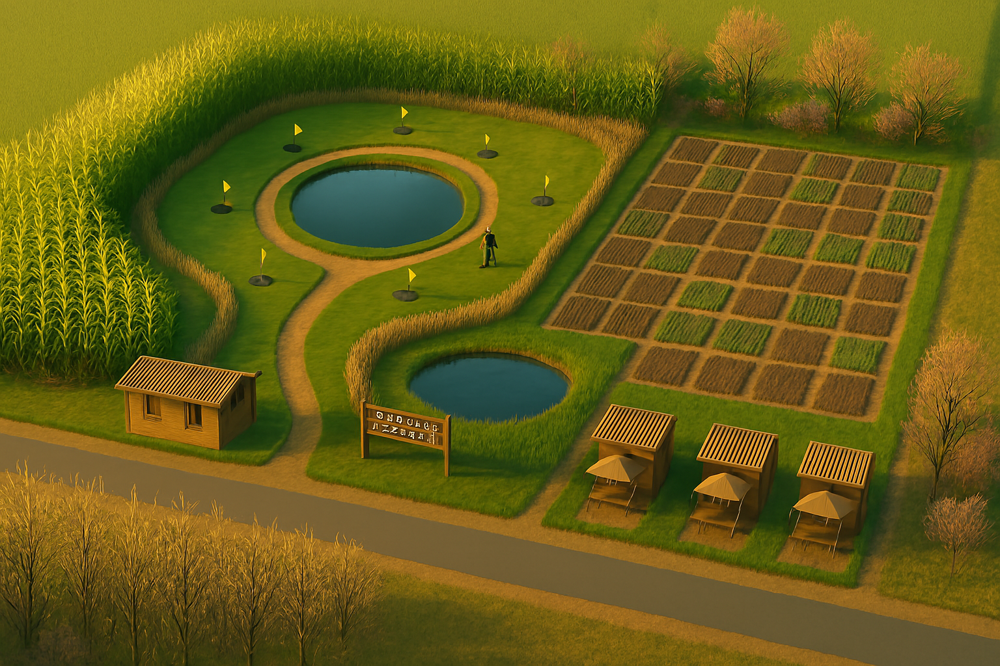
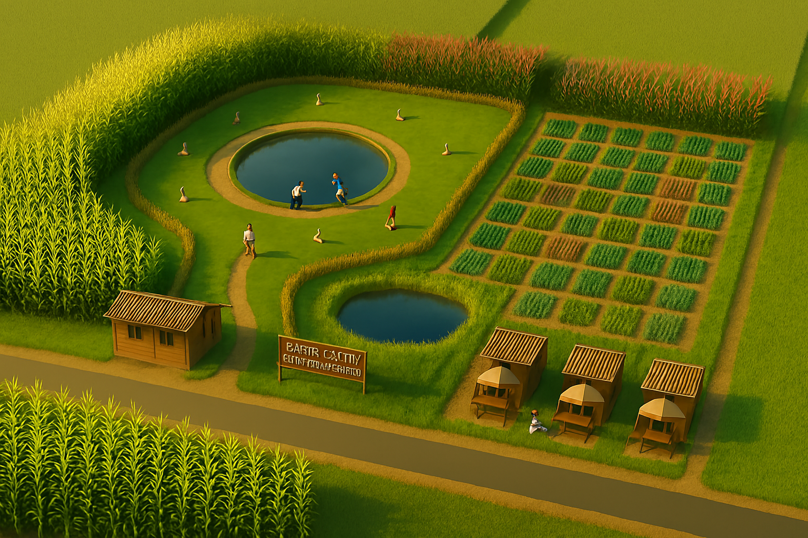
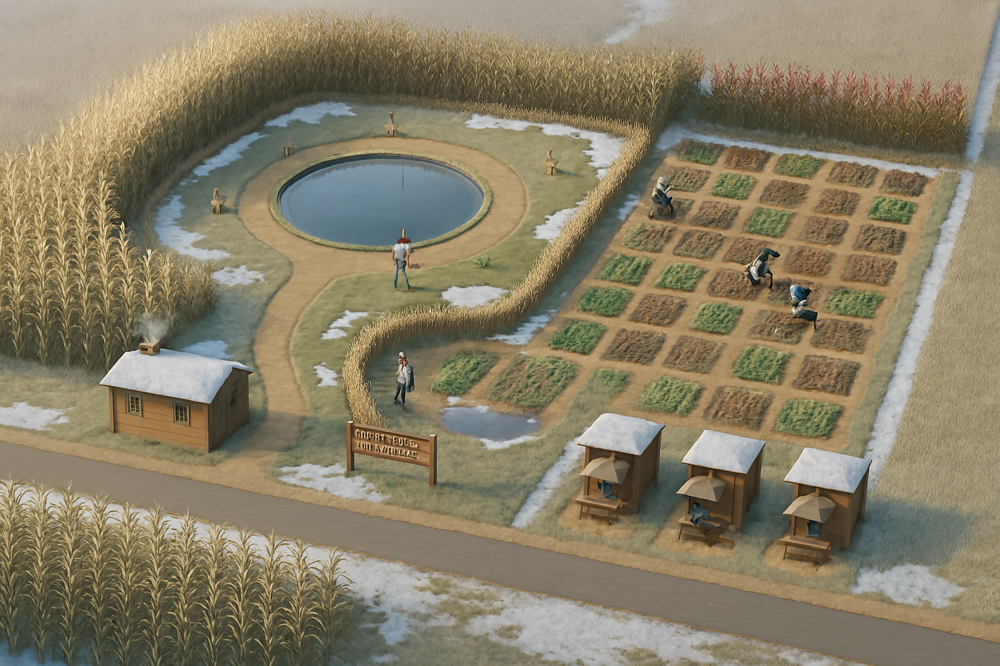

속도 규칙 요약
정상(+): 물≥50 & 거름≥50 → 성장 경고(-1): 둘 중 하나 <50 → 완만 하락 위험(-2): 둘 다 <50 → 빠른 하락 구간: 70% → 50% → 30% → 0%출발: 70% 상태 (가을)

52%
51%
70%
정상 관리 중. 여기서 자원이 떨어지면 역행이 시작됩니다.
저하(-1): 물 부족 / 거름 정상
20%
80%
65%
하나만 미달이므로 완만하게 70%→50%로 하락.
50% 도달 (여름)

18%
75%
50%
여기서 다시 채우면 상승 모드로 전환됩니다.
저하(-2): 물 0 + 거름 0

0%
0%
45%
둘 다 미달이면 빠르게 50%→30%로 하락(-2 속도).
30% 도달 이하 (봄)

0%
10%
30%
지속 결핍으로 30%까지 하락. 방치가 길면 0%에 근접합니다.
최종: 0% (겨울 기본)

0%
0%
0%
완전 방치 시 겨울(휴면) 상태. 다시 시작하려면 물·거름을 채우고 씨앗을 심으세요.
회복 예시
96%
92%
32%
충분히 채우면 즉시 상승 모드로 전환되어 50%→70%→90%로 복구됩니다.